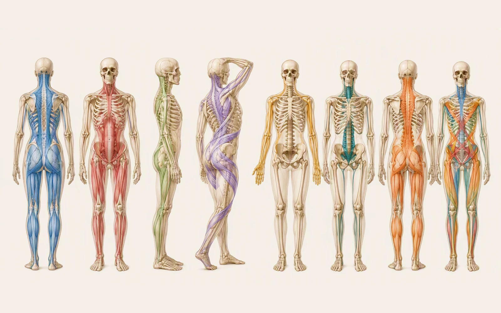
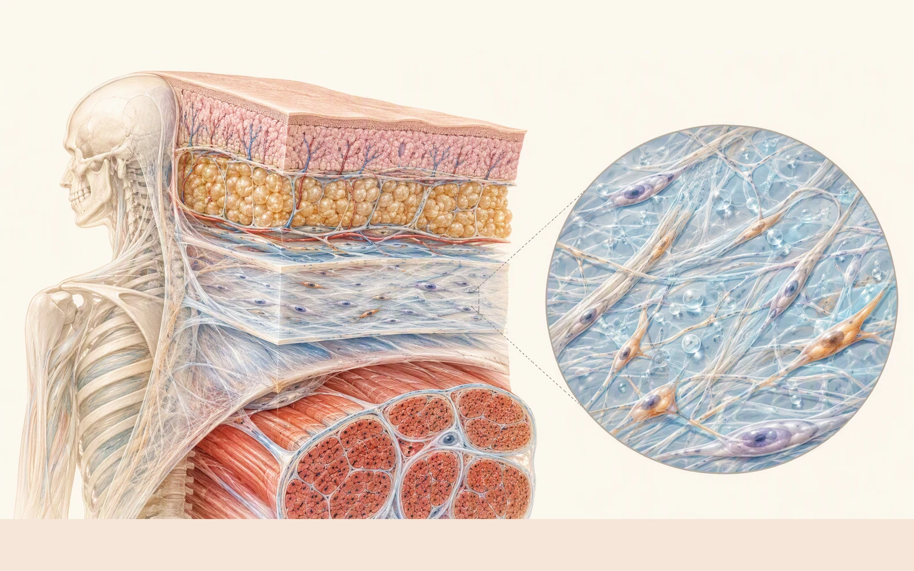
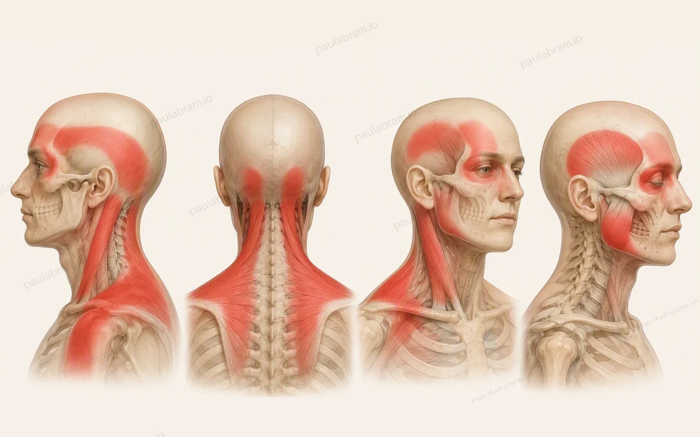

The Complete Fascia Reference Guide
A visual guide to myofascial meridians, trigger points, convergence zones, and common pain patterns. Every section leads with an annotated image; the text supports the image rather than replacing it.

Image Index
The complete set of purpose-built visual assets. Select any image to jump to the section where it is used.
Sources, Scope & Disclaimer
The guide synthesizes established anatomy, the Anatomy Trains model, trigger-point references, and emerging fascia research.


Proposed myofascial-meridian framework used to organize line-based reasoning.
Metastudy examining anatomical continuity of proposed myofascial meridians.
Evidence summarized for chronic low-back pain and fibromyalgia, with attention to quality limitations.
Hyaluronan, mechanotransduction, force transmission, and fascial-layer sliding.
Established reference for trigger-point locations and referral maps.